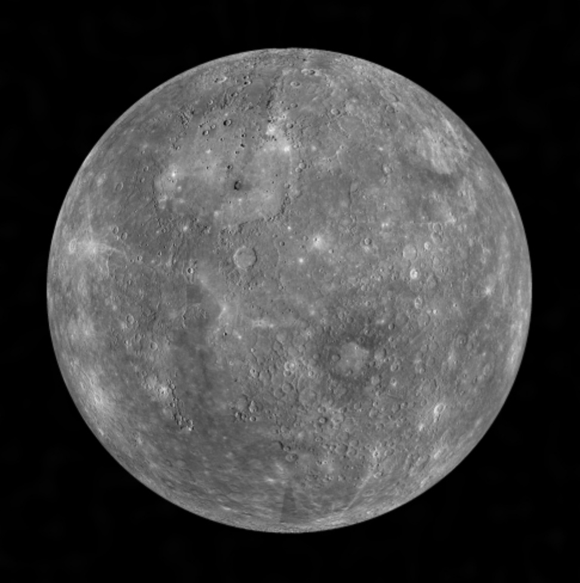
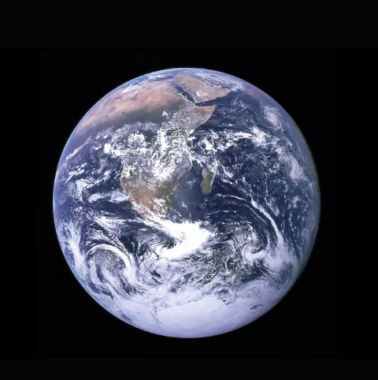
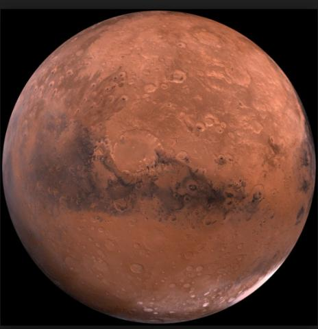
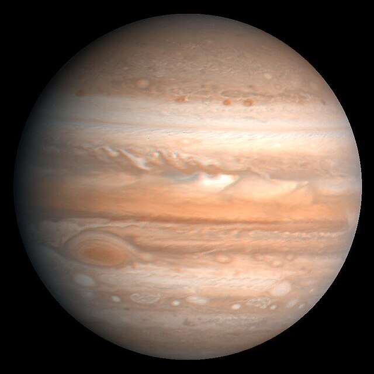
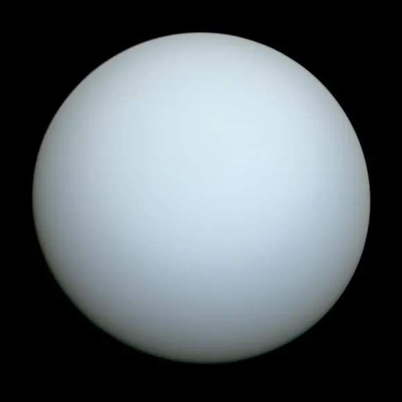
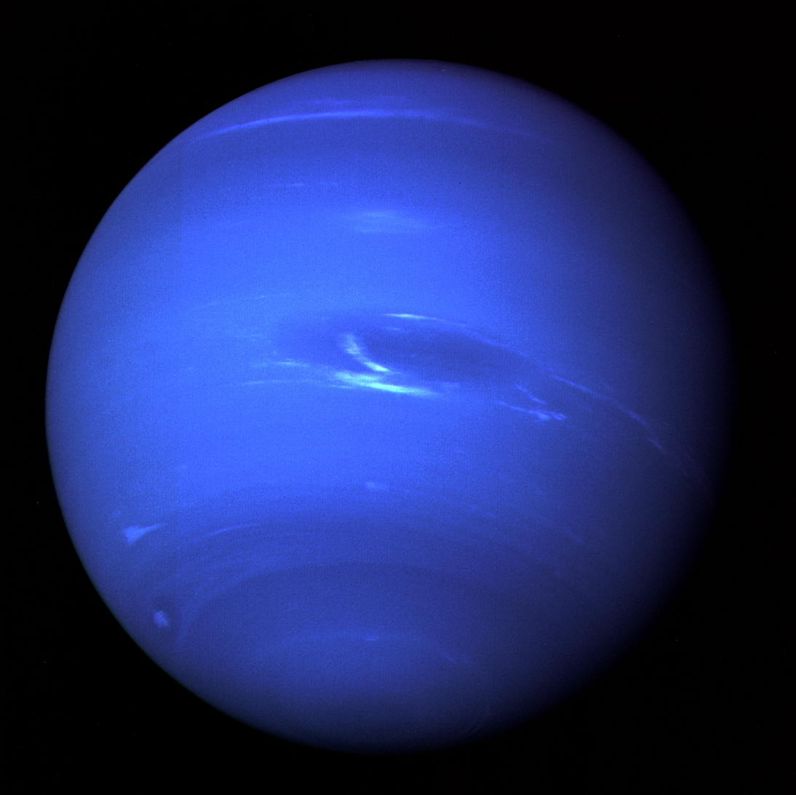

태양과 태양계 행성들
-
 태양계의 중심, 뜨겁고 밝은 항성으로 모든 에너지원입니다.
태양계의 중심, 뜨겁고 밝은 항성으로 모든 에너지원입니다. -

태양에 가장 가까운 행성으로 낮과 밤의 온도 차이가 큽니다.
-
 지구와 비슷한 크기의 행성으로 뜨거운 대기로 덮여 있습니다.
지구와 비슷한 크기의 행성으로 뜨거운 대기로 덮여 있습니다. -

우리가 사는 행성으로, 생명이 존재하는 유일한 곳입니다.
-

붉은색 표면으로 유명하며, 과거에 물이 존재했던 흔적이 있습니다.
-

가장 큰 행성으로, 거대한 대기 폭풍인 대적점이 유명합니다.
-
 아름다운 고리로 유명하며, 가스 행성입니다.
아름다운 고리로 유명하며, 가스 행성입니다. -

차가운 가스 행성으로, 독특하게 축이 기울어져 있습니다.
-

가장 바깥에 위치한 행성으로 강한 바람과 푸른색을 띕니다.